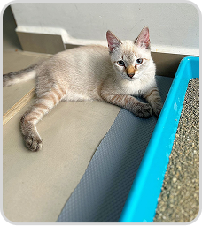

Bartô ♂
Gato | Macho | Porte M
DESCRIÇÃO: Bartô foi resgatado junto com seus 4 irmãos e sua mamãe Angel. Estavam
em situação de rua, e viviam em uma casa improvisada de plástico. Bartô foi o único que sobrou dos
seus irmãos. É um filhote com muito amor e energia! Negativo para FIV e FELV.
Castrado e Vacinado.
Castrado e Vacinado.